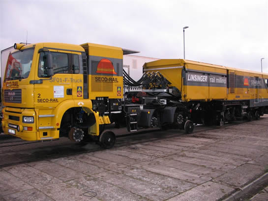
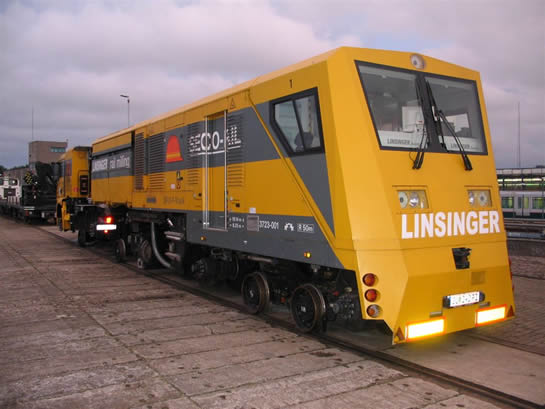

Railslijpwagen actief en ander nieuws...
- maandag 01 december 2008 10:54
- Geschreven door Rik
Afgelopen week was er een railslijpwagen, afkomstig uit Oostenrijk, actief op het Rotterdamse metronet. De slijpwagen heeft onder andere de metrorails in Spijkenisse geslepen. In de nacht van maandag 18 op dinsdag 19 juni zijn de sporen richting metrostation De Akkers geslepen. De metro's die over de geslepen sporen rijden maken minder lawaai, omdat ontstane ribbels op de rails weggeslepen zijn.

De railslijpwagen is een vrachtwagen waar tijdens het slijpen de luchtbanden van worden verwijderd. Hij staat nu op speciale wielen voor de rails.

Het aparte ontwerp van de railslijpwagen springt in het oog. Tijdens een wegtransport is dit de achterzijde van de railslijpwagen. Tijdens het slijpen is het de voorzijde.
Wisselstoring
Wisselcomplex Schiedam Centrum II had in de ochtend van woensdag 20 juni te kampen met een storing. Daardoor verliep de dienstuitvoering op de Calandlijn onregelmatig. De storing zou na een uur weer verholpen zijn, maar het metroverkeer heeft een groot deel van de middag onregelmatig gereden. Om de vertraging toch zo veel mogelijk te beperken, reden sommige metro's van de Calandlijn niet verder dan station Hoogvliet. Er werd gekeerd in het wisselgebied Aveling.
5218
Metrorijtuig 5218 is na een revisie onlangs weer in dienst gesteld op de Calandlijn. Het rijtuig werd gereviseerd in de lijnwerkplaats Waalhaven.
5412
Metrorijtuig 5412, die betrokken raakte bij de bovenleidingbreuk tussen de stations Capelsebrug en Graskruid, is weer in dienst gesteld. Het metrorijtuig had lichte schade opgelopen aan de pantograaf. De rijtuigen 5403 en 5415, ook betrokken bij het incident, rijden momenteel zonder pantograaf op de Erasmuslijn.
Nieuwe uniformen
Aanstaande maandag zal het RET-personeel nieuwe uniformen dragen. Het accent bij deze nieuwe uniformen ligt op de autoriteit die het uitstraalt. In de huidige kledinglijn lopen bijvoorbeeld de tramconducteurs in andere uniformen dan de controlebeambten. Straks loopt iedere medewerker in hetzelfde uniform. Het nieuwe uniform straalt daarmee uniformiteit en zakelijkheid uit.
De groene uniforms bepaalden vanaf 1998 het straatbeeld. Inmiddels passen deze niet meer bij een commercieel en klantgericht bedrijf. Ook voldeden de uniformen niet meer aan de eisen van het personeel en de eisen van deze tijd.
 Lees ook: RET'ers in het nieuw (ret.nl)
Lees ook: RET'ers in het nieuw (ret.nl)
RandstadRail Erasmuslijn gestremd
De RandstadRail Erasmuslijn zal van 14 tot en met 29 juli gestremd zijn door de aanleg van onderdoorgangen bij de stations Rodenrijs en het toekomstige station Berkel Westpolder. Dit is tevens het geval in de weekeinden van 7 en 8 juli en 29 en 30 september. De RET zet vervangend busvervoer in tussen de stations Rotterdam Hofplein en Den Haag Centraal.
 Lees ook: RandstadRail twee weken en twee weekeinden gestremd (ret.nl)
Lees ook: RandstadRail twee weken en twee weekeinden gestremd (ret.nl)